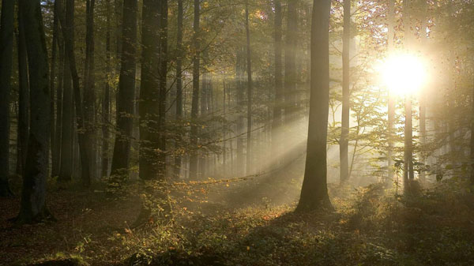
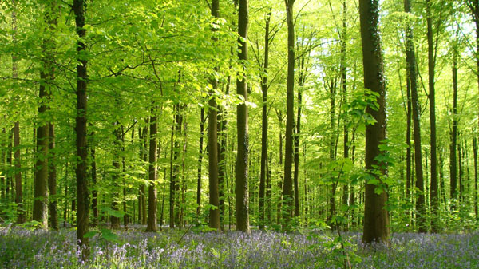
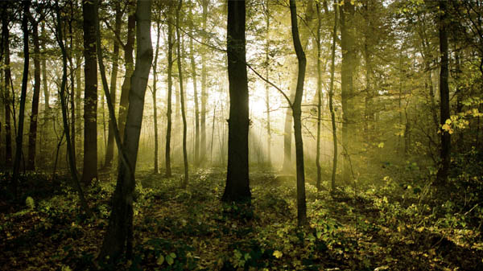
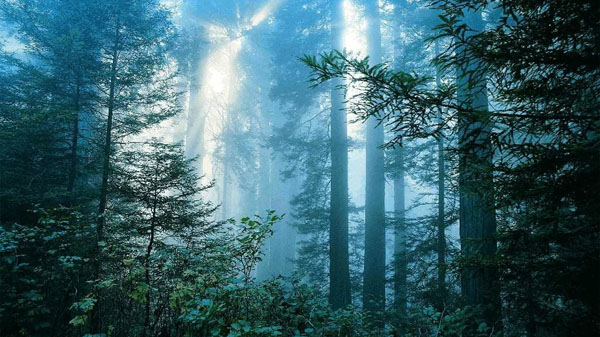
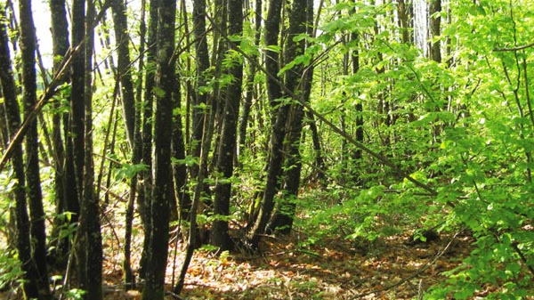
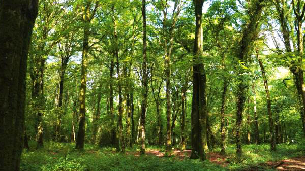
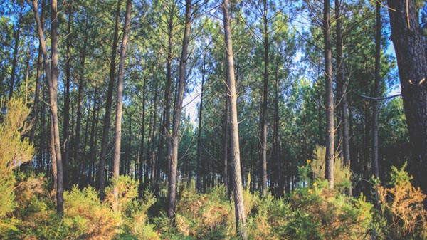

Les forêts EcoTree

La forêt de Coadou est située à proximité de Loguivy-Plougras, commune du Trégor située aux confins des Côtes-d’Armor et du Finistère.
Non loin de la mythique forêt de Brocéliande, située au cœur d'une vallée verdoyante traversée par la rivière Saint Emilion, la forêt de Coadou s’est installée au pied de la commune de Loguivy-Plougras. Dispersés dans le sol, ses mythiques résineux, une essence bien connue de la région, qui prend racine dans le territoire celte depuis son introduction à grande échelle en Bretagne après la seconde guerre mondiale. Cette forêt pleine de mystère s'offre en un fabuleux voyage dans le temps, de la guerre des Gaules en passant par les épopées du roi Arthur.
La forêt de Brokus est située dans le Morbihan, terre de légendes, d'abondance et de ressourcement.
Il faut passer sous la fraicheur des larges branches alignées qui s’entrecroisent en voûte, guetter les mosaïques bleues qu’elles dessinent et passer, ça, là, le visage pour s’inonder des généreux rayons que la Bretagne sait offrir lorsqu’on la contemple. Il faut entendre aussi les craquements d’écorce, le frayement des abeilles, les effleurements des écureuils, la ritournelle des mouettes rieuses et des grives musiciennes. Il faut sentir encore les effluves des sèves, alchimie de parfums dont seule la nature connaît le secret. Dans la forêt de Brokus règne une sérénité qui choque l’idée de bruit, de monde et de vitesse. Le temps appartient à ceux qui s’en donnent, la contemplation suspend le temps ; et la forêt de Brokus semble être ce lieu désigné par Dieu pour l’illustrer.

La forêt de Bourrus est située dans le Morbihan et plus exactement dans une petite commune de Langoëlan dont le nom chantant signifie, en breton, "près de la lande sauvage".
Ce territoire arrosé par le Scorff et ses premiers affluents s'inscrit dans l'histoire et abrite un patrimoine unique en son genre. A quelques encablures de l'étang du Dordu et de l'église paroissiale de Saint Barnabé, au-devant du dolmen de la Villeneuve, du lavoir du bourg et du monument de Kergoët, s'enracinent, sous les stries d'une terre qui traverse les âges et les légendes, de jeunes plants qui s'ouvrent à la vie. Dans ce petit coin de paradis breton, on raconte que l'alliance d'une glèbe généreuse, d'un soleil joueur et d'une bruine farceuse offre des conditions exceptionnelles pour les boisements.

La forêt de Mevenez, petit havre de paix perdu au milieu du Morbihan, déploie une flore et une faune aux richesses insoupçonnées.
Les légendes qui racontent ce petit bout de terre ancré dans l’ancien royaume de Broërec sont nombreuses. Prénom féminin aux origines celtiques, Mevenez signifie joie. On dit aussi que toutes celles qui portent ce nom possèdent la faculté de découvrir l’âme des êtres et des choses. Est-ce à dire que pour trouver le bonheur ou pénétrer la métaphysique, un petit tour dans la forêt de Mevenez suffirait ? Une chose est sûre, il y a de la lumière dans cette futaie. Le jour au soleil, le soir aux lucioles, la nuit à la lune, tout semble éclairer cette forêt ; et par là-même, ceux qui, en quête de sens, s’y aventurent.

La forêt de Mariaker se situe dans le Morbihan, sur des terres où se dessine entre rivières bleutées et rivages dorés une sylve foisonnante.
Entrez discrètement dans ces bois profonds, ouvrez les yeux, prêtez l’oreille ; et soudain, une biche et son faon valsent à travers les taillis, le déboulé puissant d’un sanglier se fait entendre, un grand cerf surgit à l’orée, superbe et impétueux. Ici, chênes, châtaigniers, sapins, ifs et noisetiers se côtoient dans un foisonnement inextricable de verdure ; à leurs pieds, s’ouvrent à la vie jacinthes des bois, primevères, ails des ours ainsi qu’une multitude de champignons. A contempler ce spectacle grouillant de vie, comment ne pas se dire que la forêt est un état d’âme ?

La forêt du Morvan est située au Faouët, charmant territoire délimité par le cours du ruisseau du Moulin du Duc et par la rivière Inam.
C’est au Pays de Morvan, premier Roi de la Bretagne unifiée qui résista victorieusement aux armées franques de Louis le Débonnaire que se situe la forêt du même nom. Est-ce de cette rude époque que les arbres ensilés au sol tiennent leur robustesse ? Châtaigniers, chênes et hêtres composent ce petit bout de terre. Et sans doute ont-ils été les objets d’inspiration des nombreux peintres, photographes français et étrangers qui firent du Faouët un des principaux centres artistiques de la Bretagne intérieure. Qui mieux que la nature sait allier les couleurs et la matière ?

La forêt de Kerautret est située au lieu-dit Le Golo, à quelques encablures de Plouray et des bassins versants de l'Ellé et de l'Aër.
Au confluent de Plouray, Langonnet, Saint-Tugdual, Priziac et Le Croisty s’élève la forêt de Kerautret. Au milieu d’arbres centenaires, de jeunes plants d’épicéas de Sitka viennent d’y prendre pied et s’égayent désormais dans ce lieu de vie qui ouvre un nouveau cycle. Etymologiquement, le nom Kerautret pourrait se traduire par « village du dénommé Autret, signifiant à l'origine l'ami utile ». Qu’y a-t-il en effet de plus utile qu’une forêt ? Venez-y respirer la chlorophylle et l’iode, cette forêt est votre alliée.
